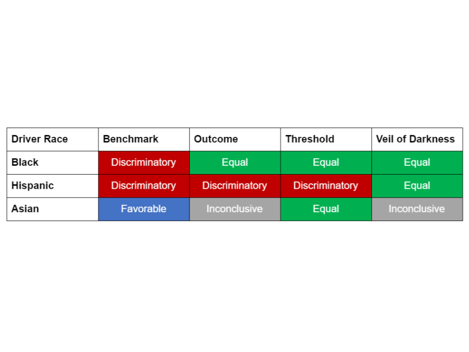

Discussion
As indicated by the table below, most of the results from our analysis indicate equal, favorable or inconclusive assessment of discrimination against minority drivers during DPS’ vehicular stops and searches. The exception is with Hispanic drivers, for which three out of four tests conducted suggest the presence of racial profiling. A major
limitation of this analysis is that driver race had to be estimated given systematic misclassification by the DPS: the conclusion that Hispanic drivers likely experience racial profiling during the DPS’ vehicular stops and searches hinges upon the accurate imputation of race conducted by the Stanford Open Policing Project (the providers of our data), which is hard to get a sense of given the lack of actual data on driver race.

Nonetheless, the finding of a strong likelihood that racial profiling is present against Hispanic drivers should be motivation for the DPS to take more seriously the issue of racial profiling, which until recently they have denied existed based on their own analysis.
More recently, after reporting by the Austin American Statesman and other publications on racial profiling, DPS in the summer of 2017 committed to a broader examination of racial profiling. The examination itself has been subject to
some criticism
, given that the expert picked has ties with police, and the DPS still denies that racial profiling is taking place.
The DPS is legally mandated by the State of Texas to conduct an analysis of racial profiling, which itself is illegal under state law.
State Bill 1074
, signed into law on June of 2001 and made effective on September 1st, 2001, updated the
code of criminal procedure to explicitly prohibit racial profiling by law enforcement officials in the state. It also updated the code to mandate a written policy on racial profiling. This policy must define acts of racial profiling, prohibit officers from engaging in those acts, provide an actionable public means of complaint and education about those means, and require the collection and reporting on of information on motor vehicle stops conducted by officers. While this data is legally not prima facie evidence of racial profiling, the law does mandate some analysis by law enforcement agencies to determine the extent and character of racial profiling during these stops.
In order to draw any conclusions as to whether or not our analysis is suggestive of illegal acts of racial profiling by the DPS, two questions based on this relevant excerpt of the code of criminal procedure emerge.
First, what acts constitute racial profiling, according to the DPS?
If the DPS is abiding by the code of criminal procedure, these acts must be written down somewhere. A
“Traffic Stop Data Report” from October of 2000 suggests that this information is recorded in “Chapter 1, Annex 1” of the “Traffic Law Enforcement Manual,” but after a lengthy search of online sources we were not able to recover any records documenting the DPS’ policy defining racial profiling and the measures taken to address it. This is unfortunate because it makes us unable to conclude whether or not our analysis demonstrating the likely presence of racial profiling is an indication of illegal behavior. It is also unfortunate because it means that the public is unable to hold the DPS, an agency devoted to protecting public safety that has been charged at times with doing the opposite, accountable.
The DPS should make their definition of racial profiling and the practices they engage in to prevent it widely available, so that they can be held accountable by the public and so that analyses of their vehicular stop and search practices can be characterized in a legal manner.
Second, what standards are applied to the reporting and analysis of racial profiling data, and is the DPS meeting these standards? According to the Texas Commission on Law Enforcement (TCOLE), the organization responsible for regulating Texas’ law enforcement agencies, there are two sets of standards that apply to agencies conducting vehicular stops and searches.
The “partially exempt” tier, which DPS falls under because they have installed video and audio equipment on their vehicles, exempts the DPS from having to conduct any analysis of racial profiling. They simply have to provide data on:
the number of motor vehicle stops
the number of types of race or ethnicity of the person(s) who were stopped was
the number of stops that the race or ethnicity was known prior to the stop
the number of stops in which a search was conducted
number of searches that consent was received prior to search
What can be gleaned from these statistics about the extent and character of racial profiling? If the number of stops in which a search was conducted is broken down by racial group, a benchmark test could be conducted. However, this is a test with significant statistical limitations, so on its own it is hard to reach a rigorous conclusion about racial profiling. The DPS does provide these data, but does not conduct any statistical analysis and does not reach any conclusions in their
most recent report.
Even if the DPS fell into
the non-exempt, “full report” tier, the additional requirements would not necessarily result in a meaningful statistical analysis of racial profiling. While a full report does include data on search outcomes, making an outcome test possible, the analysis required in this report makes no mention of any specific statistical test or standard of statistical rigor. Rather, the guideline requires a “comparative analysis” of the number of stops experienced by minority drivers and white drivers and the racial distribution of stops and searches conducted by individual officers. The first part of this “comparative analysis” makes no indication that a normalizing factor is necessary to contextualize the raw count of stops (not to mention that there is no indication of any analysis examining the outcomes of these stops and searches), setting the statistical standard below even that of the benchmark test (which has the lowest statistical standard out of our four tests, demanding the simplest normalization of the data used). And the second part of this analytic approach is limited by the sample size associated with individual officers, making it hard to draw conclusions about racial profiling at large.
As the answer to these questions demonstrate, while the DPS may be following the letter of the law (e.g. reportedly using a written policy on racial profiling, reporting necessary data), they are not necessarily following the intent: to prohibit racial profiling, define it, enact policies to prevent it, and collect data to analyze it. The DPS may have a rigorous definition of racial profiling and a comprehensive strategy to prevent it, but if they do it is not easily available to the public, making it impossible to hold the DPS accountable and impossible to determine whether or not they are engaged in illegal racial profiling. The DPS may collect and report data on vehicular stops and searches, but they do not analyze this data or reach any conclusions as to the presence of racial profiling in their ranks. Whether this is out of a lack of resources, a lack of interest or a lack of belief in the presence of racial profiling is immaterial, as the result is uninformed public discourse, a lack of transparency and trust in DPS, and a lack of meaningful change intended to address an issue many citizens in Texas believe to be critical. While this status quo may be legal, it is socially unacceptable.
Racial profiling during vehicular stops and searches violate this country’s legal and ethical norms, and can result in severe human impacts. Our analysis of data on traffic stops and searches conducted by Texas’ Department of Public Safety suggests a strong likelihood of racial profiling against Texas’ Hispanic drivers. While the DPS is technically following the letter of the law with their approach to managing racial profiling, they are not owning up to the likely presence of profiling by their officers through a more diligent analysis or attempt at transparency. To go about addressing both the likelihood of racial profiling and the failure of the DPS to manage this critical issue with transparency and accountability, the DPS should start with a rigorous and impartial analysis of racial profiling during stops and searches conducted by their officers. This analysis should include statistical tests like the ones our team has conducted, but should also include interviews with relevant stakeholders and a thorough review of legal and procedural documents. This analysis should also be complemented by efforts to improve transparency around the department’s policies and practices when it comes to vehicular stops and searches: in other words, the public should easily be able to learn what the DPS defines as racial profiling and what they are doing to ensure it does not occur. And finally, given that our analysis does suggest a strong likelihood of racial profiling against Hispanic drivers, we recommend the DPS enact mandatory training aimed at combating implicit and explicit racial biases. While our results are far from conclusive evidence of racial profiling by the Texas Department of Public Safety, the suggestion of profiling in our analysis, the lackluster state of transparency and accountability around DPS’ vehicular stop and search patterns, and the legal, ethical and human consequences of racial profiling during traffic stops make an improvement to how DPS approaches racial profiling absolutely necessary.